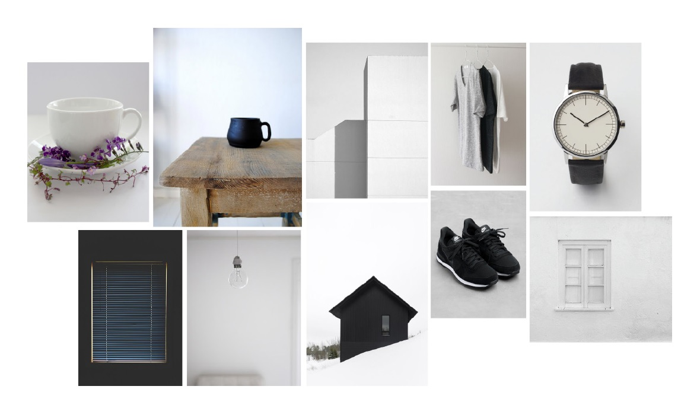

lineup & flats

‘ESSENCE’ is a collection inspired by everyday basic clothes. Basic clothes are the fundametals of wardrobe which people wears daily. It is the core element of fashion which does not get agitated by trends. It is simple, clean, timeless and gentle. The important parts of basic clothes are the details, such as a top stitches, a collar, a pocket and others. These details support the clothes in both designs and functions and also the basis of one’s decision on choosing a clothes.
Three archetypes of basic clothes: Button down shirts, Trousers and Coat These are base of one’s wardrobe. These selections serve the fundamentals of daily fashion in every occasion. After the selection, these clothes got analyzed for the central parts of forming and defining each clothes. After the analysis, the construction and fucntional details design to varies shapes and forms.